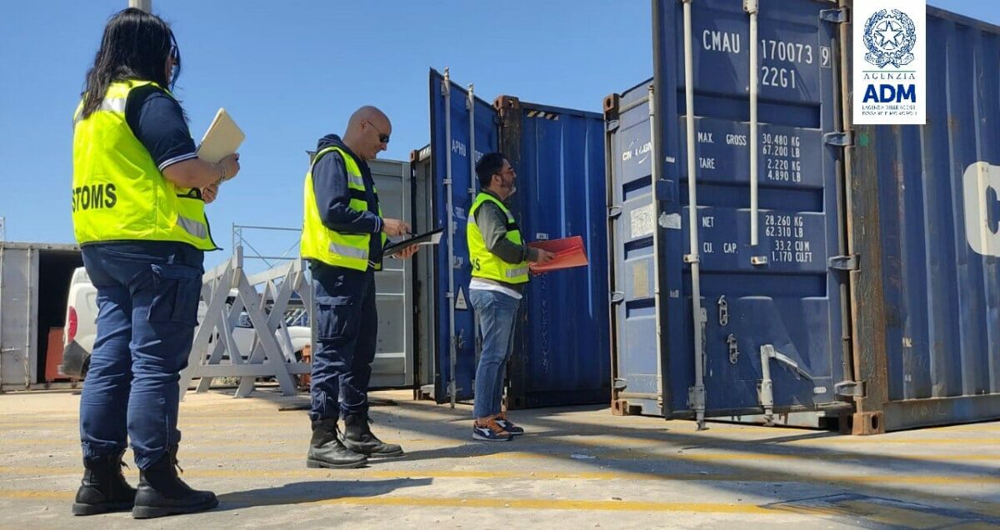
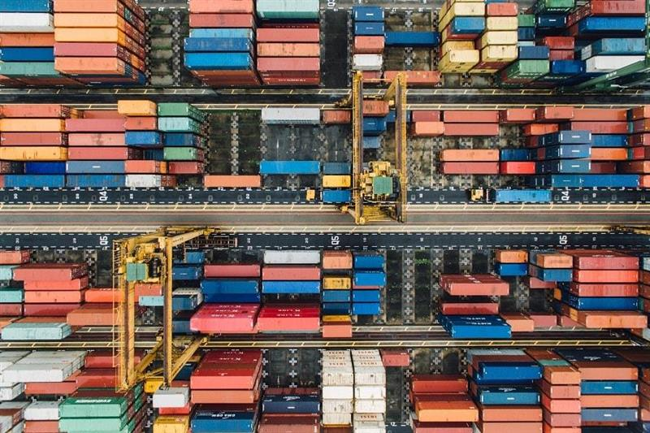
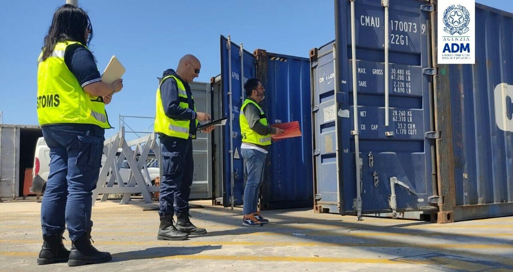
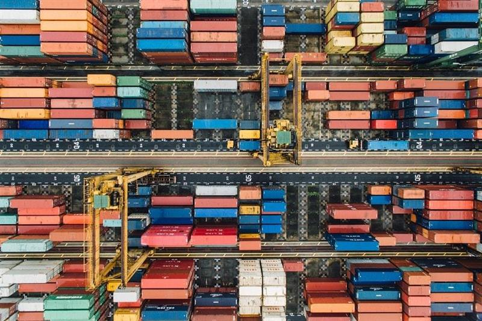
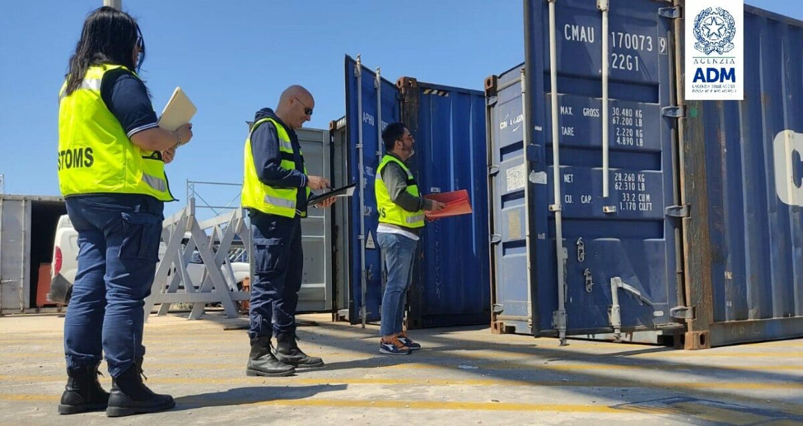
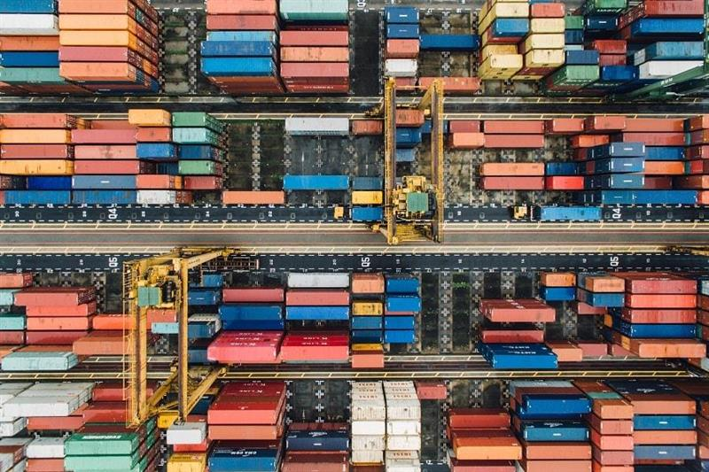
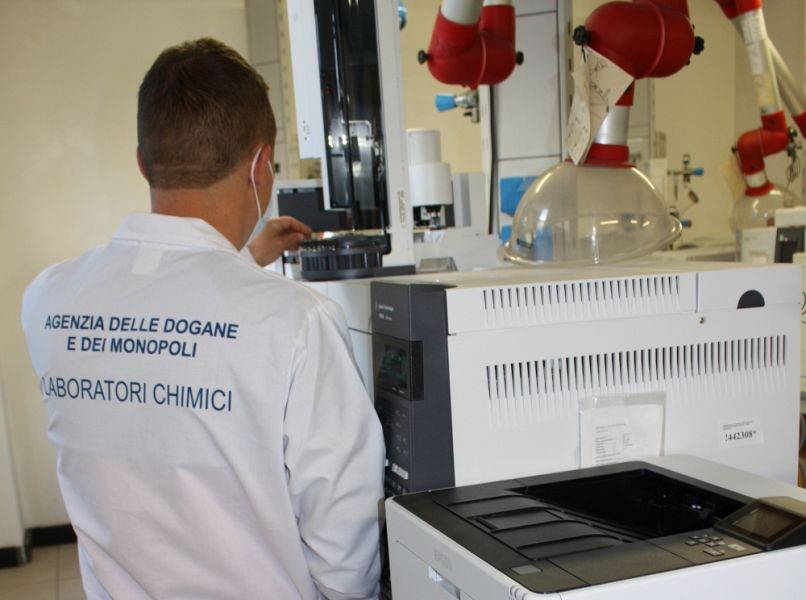
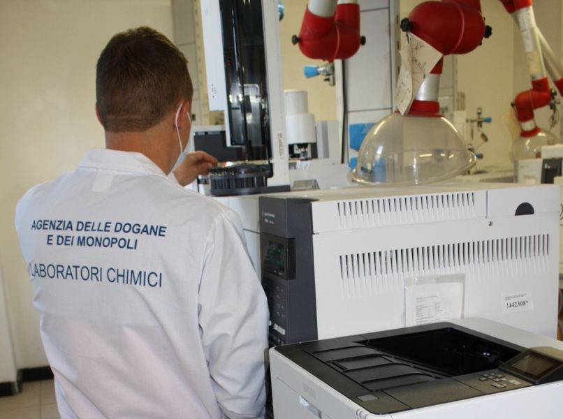

L’Agenzia delle Dogane e dei Monopoli ante litteram, nasce con regio decreto del 1853 , per garantire il controllo della fiscalità sulle imposte di fabbricazione e sul consumo, sui dazi doganali e sui regimi di monopolio. ADM è autorità regolatoria e di vigilanza anche sanzionatoria nel campo delle Energie (oli minerali, energia elettrica, gas naturale, GNL, carbone), Alcoli, Tabacchi e assimilati, Dogane e Gioco pubblico. In tali ambiti, cura l’accertamento e la riscossione dei tributi ed esercita le funzioni ispettive di polizia doganale, tributaria, valutaria e giudiziaria.
La storia doganale vera e propria in Italia inizia nel 1862 , un anno dopo la proclamazione del Regno d’Italia, quando viene promulgato in maniera ufficiale il Regolamento Doganale. Connessione con l’attività commerciale ed espressione dell’autorità statale rappresentano le due anime dell’istituzione tuttora ai giorni nostri. L’Amministrazione Autonoma dei Monopoli di Stato nasce qualche decennio dopo, con un regio decreto del 1927 che le assegna il compito di svolgere servizi di monopolio di produzione, importazione e vendita di sali e tabacchi e produzione e vendita del chinino. Insomma, un ente al passo coi tempi dell’epoca ma che era chiaramente destinato a mutare.
L’Agenzia delle Dogane viene istituita con decreto legislativo nel 1999 e, a seguito del decreto legge del 2012 , diventa invece quella che conosciamo oggi, ossia l’Agenzia delle Dogane e dei Monopoli. Da quell’anno infatti l’agenzia incorpora l’AAMS, ossia l’Amministrazione Autonoma dei Monopoli di Stato. Chi di voi è avvezzo con giochi come le slot machine o il poker online magari conosce questa sigla un po’ meglio, perché appunto fino al 2012 era proprio l’AAMS a curarsi di questo aspetto. Da quell’anno in poi nasce quindi un nuovo ente, adibito alla gestione di entrambe le sfere economiche che prima venivano curate separatamente.
L’Agenzia delle Dogane e dei Monopoli è un ente pubblico che gode di personalità giuridica e di un’ampia autonomia in molti ambiti: non solo in termini di contabilità e finanza, ma anche in ambito organizzativo e patrimoniale. Può anche vantare autonomia regolamentare ed amministrativa, così da poter operare senza costrizioni di alcun tipo. Tra gli obiettivi principali di questo ente troviamo:


Trovando a dover gestire, come già abbiamo detto, due sfere differenti del panorama economico nazionale, l’ADM ricopre ruoli diversi, tra cui possiamo nominarne alcuni:
 

Come ogni agenzia od ente statale, anche l’ADM si adopera per seguire delle linee guida e dei principi che regolino tutto il suo operato. L’impegno principale è quello di svolgere le proprie funzioni con legalità, trasparenza e imparzialità, implementando e valorizzando stili di gestione che puntano a raggiungere risultati in maniera corretta e sostenibile. Facilitare l’accesso dei servizi e semplificare i rapporti con gli utenti sono altri punti chiave dell’organizzazione, con un occhio sempre attento al contrasto di illeciti ed illegalità. A tal proposito avevamo già parlato di come la promozione dell’italianità all’estero sia una fattore chiave del Made in Italy, anche grazie all’aiuto dell’Agenzia delle Dogane e dei Monopoli.